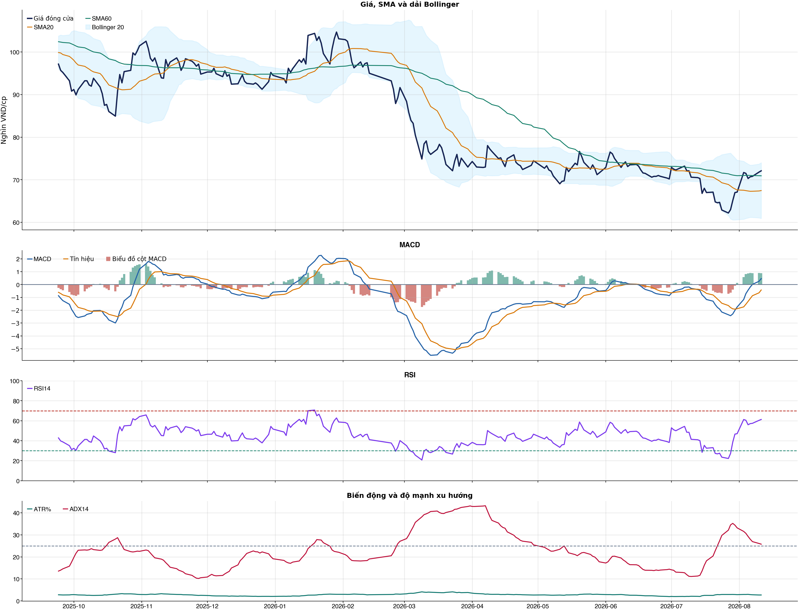
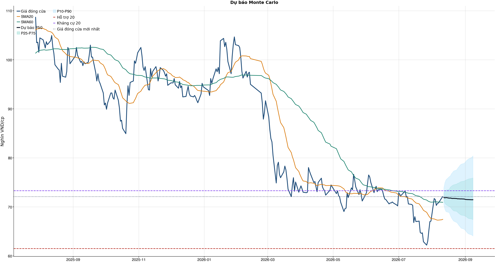
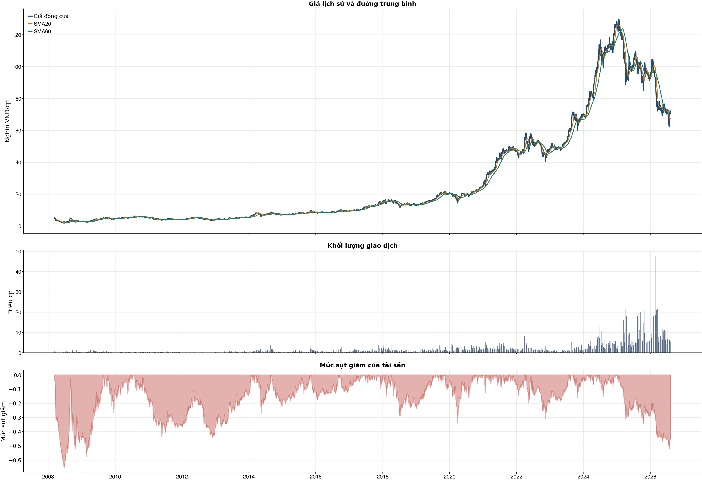

Kết quả chính
Tổng quan cơ bản
Biểu đồ kỹ thuật

Tín hiệu kỹ thuật
| Xu hướng | Trung tính | Giá trên SMA60 nhưng chưa vượt SMA20. |
| MACD | Tích cực | MACD trên signal, histogram dương. |
| RSI14 | Tích cực | RSI 61.3. |
| Bollinger | Ổn định | Giá nằm trong dải Bollinger. |
| ADX | Xu hướng tăng | ADX 25.8, +DI vượt -DI. |
| Thanh khoản | Thấp | 0.64 lần trung bình. |
| Stochastic | Cực trị | %K 89.8, %D 85.3. |
So sánh mô hình
| XGBoost | 0.510 | AUC 0.574 |
| Logistic | 0.527 | AUC 0.560 |
| Đa số | 0.500 | Mốc so sánh |
Kiểm thử chiến lược ngoài mẫu sau chi phí
| Lợi nhuận ròng | -25.8% | 749 quan sát ngoài mẫu |
| Sharpe | -0.86 | Sau chi phí |
| Mức sụt giảm tối đa | -29.2% | 67 vòng giao dịch |
| Chi phí giả định | 50.0 bps | Một vòng mua và bán |
Mức độ quan trọng của đặc trưng
| return_1d | 15.05 | Mức đóng góp |
| close_vs_sma20 | 13.81 | Mức đóng góp |
| day_of_week | 11.91 | Mức đóng góp |
| return_3d | 11.64 | Mức đóng góp |
| stoch_k_14 | 11.60 | Mức đóng góp |
| macd_hist_pct | 11.26 | Mức đóng góp |
| excess_return_1d | 10.79 | Mức đóng góp |
| market_return_1d | 10.68 | Mức đóng góp |
Điều kiện phát hành tín hiệu
| AUC của mô hình | ĐẠT | Điều kiện phát hành tín hiệu |
| Độ chính xác cân bằng của mô hình | KHÔNG ĐẠT | Điều kiện phát hành tín hiệu |
| XGBoost vượt mô hình Logistic đối chứng | ĐẠT | Điều kiện phát hành tín hiệu |
| Xác suất tăng đạt ngưỡng | KHÔNG ĐẠT | Điều kiện phát hành tín hiệu |
| Bối cảnh kỹ thuật đạt ngưỡng | ĐẠT | Điều kiện phát hành tín hiệu |
| Tỷ lệ lợi nhuận/rủi ro đạt ngưỡng | ĐẠT | Điều kiện phát hành tín hiệu |
| Dữ liệu còn mới | ĐẠT | Điều kiện phát hành tín hiệu |
| Có khối lượng vị thế hợp lệ | ĐẠT | Điều kiện phát hành tín hiệu |
| Có kết quả kiểm thử chiến lược ngoài mẫu | ĐẠT | Điều kiện phát hành tín hiệu |
| Mẫu kiểm thử chiến lược đủ lớn | ĐẠT | Điều kiện phát hành tín hiệu |
| Kiểm thử chiến lược có lợi thế ròng | KHÔNG ĐẠT | Điều kiện phát hành tín hiệu |
Quản trị rủi ro
| Rủi ro/lệnh | 1.0% | 1,000,000 VND |
| Mức dừng lỗ | 70.22 | Rủi ro mỗi cổ phiếu 2.23 |
| Mục tiêu 1 | 80.39 | Lợi nhuận/rủi ro 3.54 |
| Mục tiêu 2 | 80.39 | Dự báo/kháng cự |
Phân tích cơ bản
| P/E | 12.24 | 2026-Q2 |
| P/B | 3.08 | 2026-Q2 |
| P/S | 1.93 | 2026-Q2 |
| ROE | 26.5% | 2026-Q2 |
| ROA | 12.8% | 2026-Q2 |
| Gross margin | 34.7% | 2026-Q2 |
| Net margin | 17.2% | 2026-Q2 |
| Debt/Equity | 0.80 | 2026-Q2 |
| Current ratio | 1.56 | 2026-Q2 |
| NPL | 0.0% | 2026-Q2 |
| Dividend yield | 0.0% | 2026-Q2 |
| Market cap | 123,088.6 tỷ | 2026-Q2 |
| Revenue Growth | -17.1% | 2026-Q2 YoY |
| Profit Growth | 13.7% | 2026-Q2 YoY |
| Dòng tiền từ HĐKD | 1,703.3 tỷ | 2026-Q2 |
| CAPEX | -747.4 tỷ | 2026-Q2 |
| Lợi nhuận sau thuế | 2,570.4 tỷ | 2026-Q2 |
| Lợi nhuận hoạt động | 2,885.8 tỷ | 2026-Q2 |
| Chi phí lãi vay | -212.6 tỷ | 2026-Q2 |
| Tiền và tương đương tiền | 9,065.5 tỷ | 2026-Q2 |
| Vay ngắn hạn | 16,367.8 tỷ | 2026-Q2 |
| Vay dài hạn | 2,080.6 tỷ | 2026-Q2 |
| Tổng tài sản | 73,734.2 tỷ | 2026-Q2 |
| Tổng nợ phải trả | 32,738.4 tỷ | 2026-Q2 |
| Vốn chủ sở hữu | 40,995.7 tỷ | 2026-Q2 |
| Khoản phải thu | 13,501.5 tỷ | 2026-Q2 |
| Hàng tồn kho | 1,183.1 tỷ | 2026-Q2 |
| Dòng tiền tự do (CFO - CAPEX) | 955.8 tỷ | 2026-Q2 |
| CFO / Lợi nhuận sau thuế | 0.66 | 2026-Q2 |
| Nợ vay ròng | 9,382.9 tỷ | 2026-Q2 |
| Nợ vay / Vốn chủ sở hữu | 0.45 | 2026-Q2 |
| Phải thu / Tổng tài sản | 18.3% | 2026-Q2 |
| Khả năng trả lãi (EBIT / lãi vay) | 13.57 | 2026-Q2 |
Tin tức doanh nghiệp
| Trạng thái | Có dữ liệu | research_only |
| Nguồn / số bài | VCI | 50 |
| Bài đủ timestamp | 50 | Chỉ các bài này mới được phép dùng point-in-time |
| Sentiment 5 ngày | 0.00 | 0.0 bài trước cutoff |
| Phương pháp | keyword_heuristic_v1 | Research only; chưa dùng làm tín hiệu mua/bán |
Dự báo ngắn hạn
| 2026-08-12 | 71.91 | P10 70.44 / P90 73.87 |
| 2026-08-13 | 71.84 | P10 69.49 / P90 74.97 |
| 2026-08-14 | 71.91 | P10 69.05 / P90 75.53 |
| 2026-08-17 | 71.78 | P10 68.84 / P90 76.16 |
| 2026-08-18 | 71.80 | P10 68.27 / P90 76.30 |
| 2026-08-19 | 71.75 | P10 67.80 / P90 76.74 |
| 2026-08-20 | 71.72 | P10 67.45 / P90 77.00 |
| 2026-08-21 | 71.73 | P10 67.13 / P90 77.30 |
Biểu đồ dự báo

Lịch sử giá và mức sụt giảm

Báo cáo dùng để học tập và lập kịch bản, không phải khuyến nghị mua/bán.
Phân tích AI có kiểm chứng
Trạng thái quyết định: NO_EDGE
Tóm tắt: ML decision hiện giữ nguyên NO_EDGE. News Reader đã trích đoạn có nguồn của 4 bài để phân loại chủ đề (ket_qua_kinh_doanh: 4, co_tuc_va_hanh_dong_doanh_nghiep: 4, vi_mo: 2, nganh: 2), nhưng các trích đoạn này không tạo bằng chứng mới cho quyết định đầu tư.
Kỹ thuật: Artifact kỹ thuật: bias Tích cực; điểm 5. Chi tiết artifact: Xu hướng: Trung tính (Giá trên SMA60 nhưng chưa vượt SMA20.); MACD: Tích cực (MACD trên signal, histogram dương.); RSI14: Tích cực (RSI 61.3.); Bollinger: Ổn định (Giá nằm trong dải Bollinger.); ADX: Xu hướng tăng (ADX 25.8, +DI vượt -DI.); Thanh khoản: Thấp (0.64 lần trung bình.); Stochastic: Cực trị (%K 89.8, %D 85.3.)
Cơ bản: Artifact cơ bản: FPT Corp; kỳ 2026-Q2; P/E 12.24; P/B 3.08; ROE 26.5%; ROA 12.8%; Debt/Equity 0.80; Revenue Growth -17.1%; Profit Growth 13.7%.
Tin tức: Đã đọc trích đoạn giới hạn của 4 bài; phân nhóm rule-based: ket_qua_kinh_doanh: 4, co_tuc_va_hanh_dong_doanh_nghiep: 4, vi_mo: 2, nganh: 2. Tác động cần kiểm chứng: Đối chiếu doanh thu/lợi nhuận trong bài với BCTC và kỳ vọng thị trường. Kiểm tra ngày GDKHQ, tỷ lệ, nguồn chi trả và nguy cơ pha loãng trước khi đánh giá tác động. Đối chiếu thời điểm công bố và kênh tác động lãi suất/tỷ giá với mô hình kinh doanh. So sánh tín hiệu ngành với thị phần, nhu cầu và đối thủ trước khi suy luận cho riêng doanh nghiệp. Đây không phải sentiment hay dự báo tác động giá.
Live research: Live snapshot lấy lúc 2026-08-11T04:59:06.599873+00:00; News Reader đọc được 4 bài. ML có 3 lý do guard và vẫn là NO_EDGE. Không dùng tin live để train/backtest.
Rủi ro cần kiểm chứng
- ML guard: Balanced accuracy 0.510 < 0.520
- ML guard: Probability 49.2% < 55.0%
- ML guard: Lợi thế OOS ròng không đạt: return=-0.2579965400000007, Sharpe=-0.8604090548950347
- News Reader: Đối chiếu doanh thu/lợi nhuận trong bài với BCTC và kỳ vọng thị trường.
- News Reader: Kiểm tra ngày GDKHQ, tỷ lệ, nguồn chi trả và nguy cơ pha loãng trước khi đánh giá tác động.
- News Reader: Đối chiếu thời điểm công bố và kênh tác động lãi suất/tỷ giá với mô hình kinh doanh.
- News Reader: So sánh tín hiệu ngành với thị phần, nhu cầu và đối thủ trước khi suy luận cho riêng doanh nghiệp.
- Chỉ lưu trích đoạn giới hạn để kiểm chứng nguồn; không lưu hay hiển thị toàn văn bài báo.
- Phân nhóm là keyword rule-based để định tuyến research, không phải sentiment hay dự báo tác động giá.
- Dữ liệu News Reader chỉ phục vụ research/report; không dùng làm feature train/backtest khi chưa có lịch sử available_at point-in-time.
- Tin live/trích đoạn cần mở URL gốc để kiểm chứng bối cảnh, số liệu và thời điểm trước khi sử dụng.
Bằng chứng
- ML decision artifact: NO_EDGE. Balanced accuracy 0.510 < 0.520
- ML decision artifact: NO_EDGE. Probability 49.2% < 55.0%
- ML decision artifact: NO_EDGE. Lợi thế OOS ròng không đạt: return=-0.2579965400000007, Sharpe=-0.8604090548950347
- News Reader [Chungta]: Cổ phiếu FPT tăng 7 trong 10 phiên gần nhất - Chungta | nhóm: ket_qua_kinh_doanh, co_tuc_va_hanh_dong_doanh_nghiep (2026-08-07T07:14:00+00:00)
- News Reader [VOV.VN]: Một số cổ phiếu cần quan tâm 7/8: Cơ hội tiềm năng với FPT và VPB - VOV.VN | nhóm: ket_qua_kinh_doanh, co_tuc_va_hanh_dong_doanh_nghiep, vi_mo, nganh (2026-08-06T22:00:00+00:00)
- News Reader [Vietstock]: FPT Online sắp trả cổ tức tiền tỷ lệ 100% - Vietstock | nhóm: ket_qua_kinh_doanh, co_tuc_va_hanh_dong_doanh_nghiep (2026-08-05T12:47:00+00:00)
- News Reader [Tạp chí Kinh tế - Tài chính Online]: Ba doanh nghiệp trả cổ tức bằng tiền, FPT Online chi 10.000 đồng/cổ phiếu - Tạp chí Kinh tế - Tài chính Online | nhóm: ket_qua_kinh_doanh, co_tuc_va_hanh_dong_doanh_nghiep, vi_mo, nganh (2026-08-09T13:05:49+00:00)
Báo cáo chỉ tổng hợp artifact đã lưu để nghiên cứu; không phải khuyến nghị mua/bán. Quyết định và vị thế vẫn bị khóa theo signal_decision.json.
Tin web đã lấy
| Nguồn | Tiêu đề | Thời điểm | Link |
|---|---|---|---|
| CafeF | Chủ nhà thuốc Long Châu thông báo thay đổi quan trọng, cổ phiếu tăng kịch trần - CafeF | 2026-08-11T04:26:00+00:00 | Mở nguồn |
| Chungta | Cổ phiếu FPT tăng 7 trong 10 phiên gần nhất - Chungta | 2026-08-07T07:14:00+00:00 | Mở nguồn |
| VOV.VN | Một số cổ phiếu cần quan tâm 7/8: Cơ hội tiềm năng với FPT và VPB - VOV.VN | 2026-08-06T22:00:00+00:00 | Mở nguồn |
| Vietstock | FPT Online sắp trả cổ tức tiền tỷ lệ 100% - Vietstock | 2026-08-05T12:47:00+00:00 | Mở nguồn |
| Tạp chí Kinh tế - Tài chính Online | Ba doanh nghiệp trả cổ tức bằng tiền, FPT Online chi 10.000 đồng/cổ phiếu - Tạp chí Kinh tế - Tài chính Online | 2026-08-09T13:05:49+00:00 | Mở nguồn |
| thuonghieucongluan.com.vn | Cổ phiếu đáng chú ý ngày 7/8: FPT, GMD, SAB - thuonghieucongluan.com.vn | 2026-08-06T23:23:00+00:00 | Mở nguồn |
| Tin nhanh chứng khoán | Nhìn lại diễn biến nhóm cổ phiếu được các công ty chứng khoán khuyến nghị tuần qua - Tin nhanh chứng khoán | 2026-08-07T10:54:47+00:00 | Mở nguồn |
| Báo Dân trí | Nhiều công ty chốt cổ tức lớn, thành viên nhà FPT gây chú ý - Báo Dân trí | 2026-08-10T07:29:22+00:00 | Mở nguồn |
| nguoiquansat.vn | Cổ phiếu đáng chú ý ngày 10/8: MSN, MWG, FPT - nguoiquansat.vn | 2026-08-09T14:51:01+00:00 | Mở nguồn |
| CafeF | Doanh nghiệp chốt quyền trả cổ tức trong tuần từ ngày 10/8-14/8, tỷ lệ cao nhất 100% - CafeF | 2026-08-10T06:40:00+00:00 | Mở nguồn |
News Reader: bài đã đọc và trích đoạn
| Nguồn | Tiêu đề | Nhóm | Thời điểm | Trích đoạn đã đọc | Link |
|---|---|---|---|---|---|
| Chungta | Cổ phiếu FPT tăng 7 trong 10 phiên gần nhất - Chungta | ket_qua_kinh_doanh, co_tuc_va_hanh_dong_doanh_nghiep | 2026-08-07T07:14:00+00:00 | Xem trích đoạnTập đoàn FPT vừa thông qua việc triển khai phương án phát hành hơn 171,4 triệu cổ phiếu thưởng cho cổ đông. Thời gian dự kiến thực hiện không muộn hơn quý III/2026. FPT vừa công bố Nghị quyết của HĐQT về thông qua việc triển khai phương án phát hành cổ phiếu để tăng vốn cổ phần từ nguồn vốn chủ sở hữu. Theo đó, FPT dự kiến phát hành hơn 171,4 triệu cổ phiếu thưởng cho cổ đông với tỷ lệ thực hiện quyền là 10:1, tức cổ đông sở hữu 10 cổ phiếu sẽ được nhận 1 cổ phiếu mới. Cổ phiếu không bị hạn chế chuyển nhượng. Dữ liệu diễn biến giá cổ phiếu FPT trong 10 phiên gần nhất. Tổng giá trị phát hành tính theo mệnh giá hơn 1.714 tỷ đồng, nguồn vốn được lấy từ lợi nhuận sau thuế chưa phân phối thuộc nguồn vốn chủ sở hữu tại thời điểm ngày 31/12/2025 trên Báo cáo tài chính công ty mẹ năm 2025 đã được kiểm toán. Thời gian dự kiến phát hành không muộn hơn quý III/2026. Nếu thành công, vốn điều lệ của FPT sẽ tăng từ hơn 17.143 tỷ đồng lên mức gần 18.858 tỷ đồng. Về kết quả kinh doanh , kết thúc 6 tháng đầu năm, FPT ghi nhận doanh thu 26.269 tỷ đồng, lợi nhuận trước thuế 5.714 tỷ đồng, lần lượt tăng 12,6% và 18,1% so với cùng kỳ năm ngoái, bám sát kế hoạch lợi nhuận đã đề ra từ đầu năm. Lợi nhuận sau thuế cho cổ đông công ty mẹ đạt 5.055 tỷ đồng, tăng trưởng 14,1%, EPS (lợi nhuận trên cổ phiếu) đạt 2.967 đồng/cổ phiếu, tăng trưởng 13,4% so với năm trước. Nửa đầu năm 2026, FPT thắng thầu 14 dự án với quy mô hơn 10 triệu USD/dự án, doanh thu ký mới mảng Dịch vụ CNTT nước ngoài tăng trưởng 32,3% so với cùng kỳ Trên thị trường chứng khoán , trong 10 phiên gần nhất, FPT ghi nhận tăng 7, trong đó có 1 phiên tăng trần. Từ mức giá 62.200 đồng/1cp ngày 27/7, mã FPT đang vững vàng ở mốc 70.900 đồng/1cp chiều nay (ngày 7/8). FPT giữ vững vị thế trong hai bảng xếp hạng uy tín của Vietnam Report năm 2026 Đơn vị phần mềm sức khỏe được FPT 'chọn mặt gửi vàng’ 90 ngày thần tốc FPT cùng Lào Cai dựng nền móng dữ liệu số Mở cổng đăng ký 2.000 tài khoản Microsoft 365 Copilot Premium miễn phí, người F nhanh tay kẻo hết FPT 'bắt tay' OpenAI, nhắm thị trường trăm tỷ USD Cách FPT giúp tập đoàn Mỹ giảm 50% thời gian khi giải mã triệu dòng code Từ 60 kỹ sư trong 6 tuần đến tham vọng xây cứ điểm công nghệ của FPT tại Ai Cập ‘Lộ diện’ hội đồng phỏng vấn chương trình tiến sĩ công nghệ đầu tiên nhà F FPT 13 Under 35 2026 khép lại, hành trình mới bắt đầu Chân dung những người FPT tiên phong mở lối từ | Mở nguồn |
| VOV.VN | Một số cổ phiếu cần quan tâm 7/8: Cơ hội tiềm năng với FPT và VPB - VOV.VN | ket_qua_kinh_doanh, co_tuc_va_hanh_dong_doanh_nghiep, vi_mo, nganh | 2026-08-06T22:00:00+00:00 | Xem trích đoạnVOV.VN - Các công ty chứng khoán vừa đưa ra khuyến nghị một số mã cổ phiếu cần quan tâm cho phiên giao dịch hôm nay 7/8. Trong đó, nhóm cổ phiếu tiềm năng thuộc ngành Công nghệ và Ngân hàng như FPT, VPB đang thu hút dòng tiền nhờ triển vọng kinh doanh tích cực. Theo Công ty Chứng khoán Bảo Việt (BVSC), nửa đầu năm 2026, doanh thu thuần của Công ty Cổ phần FPT (mã FPT – sàn HSX) đạt 26.269 tỷ đồng (+12,6% so với cùng kỳ năm trước) và lợi nhuận sau thuế sau lợi ích cổ đông thiểu số (LNST-CĐTS) đạt 5.055 tỷ đồng (+14,1% so với cùng kỳ năm trước). Riêng Quý 2/2026, doanh thu tăng 16,4% so với cùng kỳ năm trước và LNST-CĐTS tăng 13,7% so với cùng kỳ năm trước. Cơ sở so sánh cùng kỳ đã được điều chỉnh loại bỏ mảng Viễn thông sau khi FOX chuyển sang hạch toán theo phương pháp vốn chủ sở hữu. Đơn hàng ký mới đang tăng tốc. Giá trị ký mới 6 tháng đạt 26.338 tỷ đồng (+32,3% so với cùng kỳ năm trước), gấp 1,39 lần doanh thu dịch vụ CNTT nước ngoài so với 1,15 lần của cả năm 2025. Cơ cấu hợp đồng dịch chuyển lên trên với 14 hợp đồng trên 10 triệu USD (+27,3%), 120 hợp đồng trên 1 triệu USD (+17,6%) và 157 hợp đồng trên 500 nghìn USD (+27,6%). Xu hướng ký mới của FPT tốt hơn các doanh nghiệp cùng ngành như Accenture, TCS, HCL và Infosys. Cơ cấu doanh thu dịch chuyển đúng hướng. Doanh thu chuyển đổi số 6 tháng đạt 9.610 tỷ đồng (+23,8% so với cùng kỳ năm trước), lần đầu vượt một nửa doanh thu dịch vụ CNTT nước ngoài; riêng AI và phân tích dữ liệu đạt 1.842 tỷ đồng (+54% so với cùng kỳ năm trước). Ban lãnh đạo cho biết mảng chuyển đổi AI tăng trưởng nhanh gấp ba đến bốn lần so với dịch vụ truyền thống nhưng có độ trễ ghi nhận 6 đến 9 tháng, và đây là lý do khoảng cách giữa ký mới và doanh thu đang giãn ra. BVSC dự báo doanh thu thuần 56.975 tỷ đồng (+12,6% so với cùng kỳ năm trước trên cơ sở tương đương) và LNST-CĐTS 10.716 tỷ đồng (+14,3% so với cùng kỳ năm trước), EPS 6.251 đồng/cp. Dịch vụ CNTT nước ngoài tăng 13,2% (Nhật Bản +22%, Hoa Kỳ +6%, châu Âu +40%, APAC -8%), trong nước tăng 20%, Giáo dục giảm 2%. Lợi nhuận từ công ty liên kết tăng gấp 4,4 lần nhờ hạch toán FOX theo phương pháp vốn chủ sở hữu cùng tăng trưởng hai chữ số của FRT, FOX và FPT Synnex. Một số cổ phiếu cần quan tâm 6/8: Cơ hội tiềm năng với GAS và VHC VOV.VN - Các công ty chứng khoán vừa đưa ra khuyến nghị một số mã cổ phiếu cần quan tâm cho phiên giao dịch hôm nay 6/8. Trong đó, nhóm cổ phiếu tiềm | Mở nguồn |
| Vietstock | FPT Online sắp trả cổ tức tiền tỷ lệ 100% - Vietstock | ket_qua_kinh_doanh, co_tuc_va_hanh_dong_doanh_nghiep | 2026-08-05T12:47:00+00:00 | Xem trích đoạnCTCP Dịch vụ Trực tuyến FPT ( FPT Online, UPCoM: FOC ) vừa công bố thông tin về đợt trả cổ tức bằng tiền với tỷ lệ lên đến 100%, tương ứng 10,000 đồng/cp. Ngày giao dịch không hưởng quyền dự kiến là 10/08 và ngày thanh toán nhằm vào 11/09 sắp tới. FPT Online vốn đã được biết đến với chính sách chia cổ tức cao và đều đặn hàng năm. Đây cũng là năm thứ hai liên tiếp mà Doanh nghiệp chia cổ tức với tỷ lệ 100% cho cổ đông. Tuy vậy, những lần gần đây cũng chưa phải là đợt phân phối lợi nhuận hào phóng nhất trong lịch sử FPT Online. Vào năm 2021, đơn vị thành viên của FPT thậm chí đã thực hiện đợt chia cổ tức bằng tiền với tỷ lệ lên đến 200%. Hiện nay, các cổ đông lớn nhất tại FPT Online là FPT Telecom (UPCoM: FOX ) và FPT ( HOSE : FPT ), với tỷ lệ sở hữu cổ phần lần lượt là 56.5% và 23.9%. Trên sàn chứng khoán, cổ phiếu FOC diễn biến khả quan trong năm nay với mức tăng 13% tính đến kết phiên 05/08, trong khi VN-Index giảm | Mở nguồn |
| Tạp chí Kinh tế - Tài chính Online | Ba doanh nghiệp trả cổ tức bằng tiền, FPT Online chi 10.000 đồng/cổ phiếu - Tạp chí Kinh tế - Tài chính Online | ket_qua_kinh_doanh, co_tuc_va_hanh_dong_doanh_nghiep, vi_mo, nganh | 2026-08-09T13:05:49+00:00 | Xem trích đoạnCông ty cổ phần Dịch vụ Trực tuyến FPT - FPT Online (UPCoM: FOC) dẫn đầu về tỷ lệ chi trả cổ tức trong nhóm doanh nghiệp có ngày giao dịch không hưởng quyền 10/8, với cổ tức năm 2025 bằng tiền ở mức 100%, tương ứng 10.000 đồng/cổ phiếu. Với hơn 18,4 triệu cổ phiếu đang lưu hành, FPT Online dự kiến dành khoảng 184 tỷ đồng để thanh toán cổ tức. Ngày giao dịch không hưởng quyền là 10/8/2026, ngày đăng ký cuối cùng 11/8 và thời gian thanh toán dự kiến 11/9/2026. Mức cổ tức này tiếp tục duy trì mặt bằng chi trả cao của FPT Online. Năm 2024, doanh nghiệp cũng trả cổ tức bằng tiền với tỷ lệ 100%, tương ứng 10.000 đồng/cổ phiếu. Trước đó, cổ tức tiền mặt năm 2023 ở mức 20%, tương ứng 2.000 đồng/cổ phiếu. Năm 2020, doanh nghiệp từng chi trả cổ tức tiền mặt với tỷ lệ 200%. Cũng trong ngày 10/8, Công ty cổ phần Hàng tiêu dùng Masan - Masan Consumer (HOSE: MCH) sẽ giao dịch không hưởng quyền nhận tạm ứng cổ tức đợt 1 năm 2026 bằng tiền, tỷ lệ 20%, tương ứng 2.000 đồng/cổ phiếu. Ngày đăng ký cuối cùng là 11/8 và thời gian thanh toán dự kiến 19/8/2026. Với khoảng 1,3 tỷ cổ phiếu đang lưu hành, số tiền Masan Consumer dự kiến chi cho đợt này khoảng 2.615 tỷ đồng. Masan Consumer có lịch sử chi trả cổ tức tiền mặt ở mức cao, dù tỷ lệ giữa các năm có sự biến động. Năm 2025, doanh nghiệp thực hiện hai đợt tạm ứng, mỗi đợt 25%, tương ứng 2.500 đồng/cổ phiếu. Năm 2024, tổng các khoản cổ tức tiền mặt lên tới 318%, gồm ba đợt 55%, 168% và 95%. Trước đó, cổ tức năm 2023 đạt 100%, trong khi năm 2022 và năm 2020 cùng ở mức 45%. Đối với Công ty cổ phần Bia Sài Gòn - Nghệ Tĩnh (UPCoM: SB1), ngày 10/8 là ngày giao dịch không hưởng quyền nhận cổ tức năm 2025 bằng tiền với tỷ lệ 8%, tương ứng 800 đồng/cổ phiếu. Ngày đăng ký cuối cùng là 11/8/2026 và doanh nghiệp dự kiến thanh toán vào ngày 10/9/2026. Thông tin này được Tổng công ty Lưu ký và Bù trừ Chứng khoán Việt Nam công bố. Mức cổ tức năm 2025 tiếp tục cao hơn năm trước. Bia Sài Gòn - Nghệ Tĩnh đã trả cổ tức bằng tiền 7% trong năm 2024, sau mức 5% của năm 2023. Năm 2022, tỷ lệ cổ tức tiền mặt cũng ở mức 5%. Như vậy, tỷ lệ phân phối của doanh nghiệp đã tăng dần trong những năm gần đây. Trong khi đó, Tổng công ty Phát điện 3 - CTCP (HOSE: PGV) sẽ giao dịch không hưởng quyền ngày 10/8/2026 để thực hiện phát hành cổ phiếu tăng vốn từ nguồn vốn chủ sở hữu với tỷ lệ 8%. Theo đó, cổ đông sở hữu 100 cổ phiếu được nhận thêm 8 cổ phiếu. VSDC đã | Mở nguồn |
Chi tiết báo cáo tài chính
Kết quả kinh doanh — 4 kỳ gần nhất
Hiển thị 35 dòng đầu; mở CSV đầy đủ.
| Khoản mục | 2026-Q2 | 2026-Q1 | 2025-Q4 | 2025-Q3 |
|---|---|---|---|---|
| Doanh thu bán hàng và cung cấp dịch vụ | 13,810.3 tỷ | 12,485.8 tỷ | 20,258.9 tỷ | 17,225.5 tỷ |
| Các khoản giảm trừ doanh thu | -21.8 tỷ | -5.8 tỷ | -33.4 tỷ | -21.0 tỷ |
| Doanh thu thuần | 13,788.5 tỷ | 12,480.0 tỷ | 20,225.4 tỷ | 17,204.5 tỷ |
| Giá vốn hàng bán | -9,509.9 tỷ | -8,235.1 tỷ | -13,178.2 tỷ | -10,685.7 tỷ |
| Lợi nhuận gộp | 4,278.6 tỷ | 4,244.9 tỷ | 7,047.3 tỷ | 6,518.9 tỷ |
| Doanh thu hoạt động tài chính | 582.7 tỷ | 415.9 tỷ | 553.7 tỷ | 613.1 tỷ |
| Chi phí tài chính | -300.5 tỷ | -367.2 tỷ | -476.7 tỷ | -352.6 tỷ |
| Chi phí lãi vay | -212.6 tỷ | -179.5 tỷ | -207.0 tỷ | -233.6 tỷ |
| Chi phí bán hàng | -1,149.1 tỷ | -1,002.3 tỷ | -2,027.0 tỷ | -1,916.6 tỷ |
| Chi phí quản lý doanh nghiệp | -1,282.6 tỷ | -1,210.3 tỷ | -1,898.9 tỷ | -1,647.3 tỷ |
| Lãi/(lỗ) từ hoạt động kinh doanh | 2,885.8 tỷ | 2,747.8 tỷ | 3,482.0 tỷ | 3,346.4 tỷ |
| Thu nhập khác | 28.2 tỷ | 61.7 tỷ | 40.1 tỷ | 34.8 tỷ |
| Chi phí khác | -3.5 tỷ | -5.6 tỷ | -19.0 tỷ | -6.5 tỷ |
| Thu nhập khác, ròng | 24.7 tỷ | 56.1 tỷ | 21.1 tỷ | 28.4 tỷ |
| Lãi/(lỗ) từ công ty liên doanh | 0.0 tỷ | 0.0 tỷ | 0.0 tỷ | 0.0 tỷ |
| Lãi/(lỗ) trước thuế | 2,910.5 tỷ | 2,803.8 tỷ | 3,503.2 tỷ | 3,374.7 tỷ |
| Thuế thu nhập doanh nghiệp - hiện thời | -268.6 tỷ | -454.7 tỷ | -486.2 tỷ | -589.6 tỷ |
| Thuế thu nhập doanh nghiệp - hoãn lại | -71.5 tỷ | 127.6 tỷ | -22.0 tỷ | 116.4 tỷ |
| Chi phí thuế thu nhập doanh nghiệp | -340.1 tỷ | -327.1 tỷ | -508.2 tỷ | -473.2 tỷ |
| Lãi/(lỗ) thuần sau thuế | 2,570.4 tỷ | 2,476.8 tỷ | 2,995.0 tỷ | 2,901.5 tỷ |
| Lợi ích của cổ đông thiểu số | 2.8 tỷ | -10.6 tỷ | 485.4 tỷ | 466.7 tỷ |
| Lợi nhuận của Cổ đông của Công ty mẹ | 2,567.7 tỷ | 2,487.4 tỷ | 2,509.5 tỷ | 2,434.8 tỷ |
| Lãi cơ bản trên cổ phiếu (VND) | 0.0 tỷ | 0.0 tỷ | 0.0 tỷ | 0.0 tỷ |
| Lãi trên cổ phiếu pha loãng (VND) | 0.0 tỷ | 0.0 tỷ | 0.0 tỷ | 0.0 tỷ |
| Lãi/(lỗ) từ công ty liên doanh (từ năm 2015) | 756.6 tỷ | 666.8 tỷ | 283.7 tỷ | 130.8 tỷ |
Bảng cân đối kế toán — 4 kỳ gần nhất
Hiển thị 35 dòng đầu; mở CSV đầy đủ.
| Khoản mục | 2026-Q2 | 2026-Q1 | 2025-Q4 | 2025-Q3 |
|---|---|---|---|---|
| TÀI SẢN NGẮN HẠN | 45,702.0 tỷ | 41,527.9 tỷ | 58,137.4 tỷ | 53,633.0 tỷ |
| Tiền và tương đương tiền | 9,065.5 tỷ | 7,993.6 tỷ | 10,522.1 tỷ | 9,853.5 tỷ |
| Tiền | 5,829.1 tỷ | 5,022.7 tỷ | 8,084.8 tỷ | 7,677.7 tỷ |
| Các khoản tương đương tiền | 3,236.4 tỷ | 2,970.9 tỷ | 2,437.4 tỷ | 2,175.8 tỷ |
| Đầu tư ngắn hạn | 19,906.1 tỷ | 18,751.5 tỷ | 29,631.0 tỷ | 27,125.6 tỷ |
| Đầu tư ngắn hạn | 0.0 tỷ | 0.0 tỷ | 0.0 tỷ | 0.0 tỷ |
| Dự phòng giảm giá | 0.0 tỷ | 0.0 tỷ | 0.0 tỷ | 0.0 tỷ |
| Các khoản phải thu | 13,501.5 tỷ | 12,348.0 tỷ | 14,402.0 tỷ | 13,077.0 tỷ |
| Phải thu khách hàng | 10,851.0 tỷ | 10,175.3 tỷ | 12,734.6 tỷ | 11,454.5 tỷ |
| Trả trước người bán | 1,866.7 tỷ | 1,476.7 tỷ | 952.7 tỷ | 801.3 tỷ |
| Phải thu nội bộ | 0.0 tỷ | 0.0 tỷ | 0.0 tỷ | 0.0 tỷ |
| Phải thu hợp đồng xây dựng đang thực hiện | 301.8 tỷ | 255.2 tỷ | 200.4 tỷ | 192.4 tỷ |
| Phải thu khác | 811.3 tỷ | 783.1 tỷ | 1,091.2 tỷ | 1,196.9 tỷ |
| Dự phòng nợ khó đòi | -329.3 tỷ | -342.4 tỷ | -586.2 tỷ | -613.3 tỷ |
| Hàng tồn kho, ròng | 1,183.1 tỷ | 1,094.6 tỷ | 2,193.8 tỷ | 2,050.3 tỷ |
| Hàng tồn kho | 1,252.4 tỷ | 1,163.8 tỷ | 2,277.4 tỷ | 2,134.3 tỷ |
| Dự phòng giảm giá hàng tồn kho | -69.3 tỷ | -69.3 tỷ | -83.6 tỷ | -84.0 tỷ |
| Tài sản lưu động khác | 2,045.8 tỷ | 1,340.2 tỷ | 1,388.6 tỷ | 1,526.5 tỷ |
| Chi phí trả trước ngắn hạn | 1,160.9 tỷ | 592.4 tỷ | 642.0 tỷ | 727.4 tỷ |
| Thuế GTGT được khấu trừ | 704.8 tỷ | 626.2 tỷ | 609.5 tỷ | 665.4 tỷ |
| Phải thu thuế khác | 180.1 tỷ | 121.5 tỷ | 137.1 tỷ | 133.7 tỷ |
| Tài sản lưu động khác | 0.0 tỷ | 0.0 tỷ | 0.0 tỷ | 0.0 tỷ |
| TÀI SẢN DÀI HẠN | 28,032.2 tỷ | 27,058.2 tỷ | 30,004.6 tỷ | 29,105.3 tỷ |
| Phải thu dài hạn | 546.9 tỷ | 529.1 tỷ | 564.3 tỷ | 577.0 tỷ |
| Phải thu khách hàng dài hạn | 0.0 tỷ | 0.0 tỷ | 0.0 tỷ | 0.0 tỷ |
| Phải thu nội bộ dài hạn | 0.0 tỷ | 0.0 tỷ | 0.0 tỷ | 0.0 tỷ |
| Phải thu dài hạn khác | 599.3 tỷ | 581.4 tỷ | 611.4 tỷ | 624.5 tỷ |
| Dự phòng phải thu dài hạn | -52.4 tỷ | -52.4 tỷ | -52.4 tỷ | -52.4 tỷ |
| Tài sản cố định | 12,084.2 tỷ | 11,625.3 tỷ | 17,288.5 tỷ | 16,990.5 tỷ |
| GTCL TSCĐ hữu hình | 10,662.3 tỷ | 10,218.8 tỷ | 15,359.2 tỷ | 15,156.7 tỷ |
| Nguyên giá TSCĐ hữu hình | 15,599.6 tỷ | 14,897.1 tỷ | 29,122.0 tỷ | 28,394.9 tỷ |
| Khấu hao lũy kế TSCĐ hữu hình | -4,937.3 tỷ | -4,678.3 tỷ | -13,762.9 tỷ | -13,238.2 tỷ |
| GTCL tài sản thuê tài chính | 0.9 tỷ | 1.0 tỷ | 1.3 tỷ | 1.6 tỷ |
| Nguyên giá tài sản thuê tài chính | 2.7 tỷ | 5.8 tỷ | 5.9 tỷ | 6.1 tỷ |
| Khấu hao lũy kế tài sản thuê tài chính | -1.8 tỷ | -4.7 tỷ | -4.6 tỷ | -4.6 tỷ |
Lưu chuyển tiền tệ — 4 kỳ gần nhất
Hiển thị 35 dòng đầu; mở CSV đầy đủ.
| Khoản mục | 2026-Q2 | 2026-Q1 | 2025-Q4 | 2025-Q3 |
|---|---|---|---|---|
| Lợi nhuận/(lỗ) trước thuế | 2,910.5 tỷ | 2,803.8 tỷ | 3,503.2 tỷ | 3,374.7 tỷ |
| Khấu hao TSCĐ và BĐSĐT | 434.7 tỷ | 409.9 tỷ | 814.0 tỷ | 734.2 tỷ |
| Chi phí dự phòng | -244.0 tỷ | 67.7 tỷ | 460.8 tỷ | 47.5 tỷ |
| Lãi/lỗ chênh lệch tỷ giá hối đoái do đánh giá lại các khoản mục tiền tệ có gốc ngoại tệ | -40.3 tỷ | 64.4 tỷ | 79.6 tỷ | 29.2 tỷ |
| Lãi/(lỗ) từ thanh lý tài sản cố định | 0.0 tỷ | 0.0 tỷ | 0.0 tỷ | 0.0 tỷ |
| (Lãi)/lỗ từ hoạt động đầu tư | -1,232.0 tỷ | -1,039.5 tỷ | -747.6 tỷ | -588.5 tỷ |
| Chi phí lãi vay | 212.6 tỷ | 179.5 tỷ | 207.0 tỷ | 233.6 tỷ |
| Thu lãi và cổ tức | 0.0 tỷ | 0.0 tỷ | 0.0 tỷ | 0.0 tỷ |
| Lợi nhuận/(lỗ) từ hoạt động kinh doanh trước những thay đổi vốn lưu động | 2,041.5 tỷ | 2,485.8 tỷ | 4,317.0 tỷ | 3,830.7 tỷ |
| (Tăng)/giảm các khoản phải thu | -1,122.7 tỷ | -884.6 tỷ | -1,438.9 tỷ | -532.6 tỷ |
| (Tăng)/giảm hàng tồn kho | -88.5 tỷ | -328.2 tỷ | -143.0 tỷ | 23.5 tỷ |
| Tăng/(giảm) các khoản phải trả | 1,844.8 tỷ | -2,597.2 tỷ | 1,872.8 tỷ | 1,915.1 tỷ |
| (Tăng)/giảm chi phí trả trước | -594.0 tỷ | -364.2 tỷ | -2.2 tỷ | -155.7 tỷ |
| Tiền lãi vay đã trả | -216.1 tỷ | -156.9 tỷ | -229.2 tỷ | -244.3 tỷ |
| Thuế thu nhập doanh nghiệp đã nộp | -72.0 tỷ | -979.5 tỷ | -257.2 tỷ | -452.2 tỷ |
| Tiền thu khác từ hoạt động kinh doanh | 0.0 tỷ | 0.0 tỷ | 0.0 tỷ | 0.0 tỷ |
| Tiền chi khác cho hoạt động kinh doanh | -89.7 tỷ | -23.1 tỷ | -10.9 tỷ | -40.4 tỷ |
| Lưu chuyển tiền tệ ròng từ các hoạt động sản xuất kinh doanh | 1,703.3 tỷ | -2,847.8 tỷ | 4,108.5 tỷ | 4,344.0 tỷ |
| Tiền chi để mua sắm, xây dựng TSCĐ và các tài sản dài hạn khác | -747.4 tỷ | -589.1 tỷ | -972.3 tỷ | -830.4 tỷ |
| Tiền thu từ thanh lý, nhượng bán TSCĐ và các tài sản dài hạn khác | 1.0 tỷ | 2.1 tỷ | 0.8 tỷ | 2.5 tỷ |
| Tiền chi cho vay, mua các công cụ nợ của đơn vị khác | -8,748.6 tỷ | -8,105.0 tỷ | -19,516.0 tỷ | -10,246.9 tỷ |
| Tiền thu hồi cho vay, bán lại các công cụ nợ của đơn vị khác | 7,708.5 tỷ | 6,907.8 tỷ | 17,046.2 tỷ | 9,706.1 tỷ |
| Tiền chi đầu tư góp vốn vào đơn vị khác | 671.5 tỷ | -737.7 tỷ | -415.6 tỷ | -69.5 tỷ |
| Tiền thu hồi đầu tư góp vốn vào đơn vị khác | -713.7 tỷ | 3.7 tỷ | 0.4 tỷ | 0.0 tỷ |
| Tiền thu lãi cho vay, cổ tức và lợi nhuận được chia | 503.9 tỷ | 263.4 tỷ | 563.0 tỷ | 340.8 tỷ |
| Lưu chuyển tiền thuần từ hoạt động đầu tư | -1,324.8 tỷ | -2,254.9 tỷ | -3,293.5 tỷ | -1,097.3 tỷ |
| Tiền thu từ phát hành cổ phiếu, nhận vốn góp của chủ sở hữu | 0.1 tỷ | 0.0 tỷ | 0.0 tỷ | 0.0 tỷ |
| Tiền chi trả vốn góp cho các chủ sở hữu, mua lại cổ phiếu của doanh nghiệp đã phát hành | 0.0 tỷ | 0.0 tỷ | 0.0 tỷ | 0.0 tỷ |
| Tiền thu được các khoản đi vay | 6,873.6 tỷ | 6,750.8 tỷ | 11,517.6 tỷ | 7,824.9 tỷ |
| Tiền trả nợ gốc vay | -4,467.5 tỷ | -4,164.4 tỷ | -9,866.4 tỷ | -11,220.8 tỷ |
| Tiền trả nợ gốc thuê tài chính | -0.2 tỷ | -0.2 tỷ | -0.2 tỷ | -0.3 tỷ |
| Cổ tức, lợi nhuận đã trả cho chủ sở hữu | -1,712.6 tỷ | -0.0 tỷ | -1,702.1 tỷ | -6.2 tỷ |
| Tiền lãi đã nhận | 0.0 tỷ | 0.0 tỷ | 0.0 tỷ | 0.0 tỷ |
| Lưu chuyển tiền thuần từ hoạt động tài chính | 693.3 tỷ | 2,586.2 tỷ | -51.1 tỷ | -3,402.4 tỷ |
| Lưu chuyển tiền thuần trong kỳ | 1,071.8 tỷ | -2,516.5 tỷ | 763.8 tỷ | -155.6 tỷ |